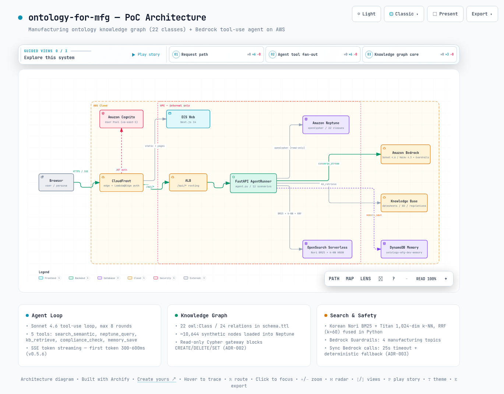

01제조에서 온톨로지가 필요한 이유
이 절은 제조 현장의 데이터 질문이 왜 어려운지 설명합니다. 그리고 지식을 그래프 형태로 정리하는 방식이 그 어려움을 어떻게 푸는지 보여줍니다.
하이테크 제조의 데이터 질문은 대부분 관계를 여러 단계 따라가야 답이 나옵니다. 예를 들어 "이 제품에 들어가는 부품 중 REACH 규제 물질을 포함한 것은 무엇인가"라는 질문을 봅니다. 답을 얻으려면 제품 → 모듈 → 부품 → 물질 → 규제로 이어지는 4단계 이상의 조인이 필요합니다.
관계형 테이블로도 답할 수는 있습니다. 하지만 질문이 바뀔 때마다 조인 경로를 다시 설계해야 합니다. LLM이 스스로 이런 질의를 만들기도 어렵습니다.
이 프로젝트는 온톨로지(도메인의 개념과 관계를 기계가 읽을 수 있게 정의한 스키마)로 제조 고유의 관계 사슬 세 갈래를 명시합니다.
- BOM 계층. BOM은 제품이 어떤 부품으로 구성되는지 적은 자재 명세서입니다. Product -hasModule-> Module -consistsOf-> Component -madeOf-> RawMaterial로 제품 구조가 4계층 그래프로 내려갑니다.
- 규제 추적. Component -containsSubstance-> Substance -regulatedBy-> Regulation 사슬이 있습니다. 부품에서 출발해 REACH-SVHC, RoHS 해당 여부를 그래프 탐색만으로 판정할 수 있습니다.
- 품질 추적. QualityIncident -about-> Component, EightDReport -addresses-> QualityIncident, EightDReport -identifies-> RootCause -linkedTo-> Supplier 관계가 있습니다. 품질 사고에서 근본 원인, 책임 협력사까지 한 그래프 안에서 연결됩니다.
표준과 규제를 데이터가 아니라 클래스로 승격한 점이 자매 프로젝트인 리테일 편과 갈라지는 지점입니다. Standard, Certification, Regulation, Substance 4개 클래스가 스키마에 존재합니다. JEDEC, IPC, AEC-Q, IATF 16949, ISO 9001, REACH-SVHC, RoHS, CBAM, IRA, USMCA 10개 체계의 실제 표준 데이터 서브셋이 data/public/에 적재됩니다.
그 결과 부품의 인증 여부와 무역 규제 노출이 그래프 질의 대상이 됩니다.
여기서 온톨로지는 OWL 추론기까지 쓰는 무거운 시맨틱 웹 스택이 아닙니다. schema.ttl에 OWL 문법으로 정의한 클래스/관계 정의를 Neptune 프로퍼티 그래프의 라벨과 엣지 타입으로 옮겨 쓰는 실용적 스키마를 뜻합니다. 질의는 SPARQL이 아니라 openCypher(그래프 데이터베이스용 질의 언어)로 합니다.
02전체 구조: 22클래스 스키마와 AWS 아키텍처
이 절은 시스템의 뼈대를 살펴봅니다. 지식을 담는 스키마, 그것을 돌리는 AWS 서비스 구성, 어떤 AI 모델을 어디에 쓰는지 순서로 정리합니다.
2.1 22클래스 스키마
스키마의 크기는 어느 정도일까요? ontology/schema.ttl에는 22개 owl:Class와 24개 owl:ObjectProperty가 정의되어 있습니다. 클래스는 다섯 그룹으로 나뉩니다.
아래 표에서 볼 것은 22개 클래스가 어떤 다섯 그룹으로 묶이고, 각 그룹이 어떤 관계로 이어지는지입니다.
| 그룹 | 클래스 | 대표 관계 |
|---|---|---|
| BOM 계층 (4) | Product, Module, Component, RawMaterial | hasModule, consistsOf, madeOf |
| 공급망 (7) | Manufacturer, Supplier, SubSupplier, CustomerAccount, Plant, Region, TradeLane | suppliedBy, subSupplies, operates, shipsVia, connects |
| 표준/규제 (4) | Standard, Certification, Regulation, Substance | conformsTo, certifiedBy, containsSubstance, regulatedBy, subjectTo |
| 품질 (3) | QualityIncident, EightDReport, RootCause | about, addresses, identifies, linkedTo |
| 운영/ESG (4) | Telemetry, MaintenanceEvent, ESGIndicator, CarbonScope | from, on, measuredAt, emits |
데이터는 어떻게 채워질까요? 합성 데이터 생성기(data/synthetic/)가 이 스키마대로 약 10,644개 노드를 만들어 ndjson으로 내보냅니다. 이어서 VPC 내부 로더가 Neptune(openCypher 벌크)과 OpenSearch(_bulk)에 적재합니다.
같은 스키마는 Pydantic 모델(data/schemas.py)로도 존재합니다. 덕분에 생성, 적재, API 응답이 하나의 타입 정의를 공유합니다.
2.2 AWS 아키텍처
실행 환경은 전부 AWS 관리형 서비스입니다. 역할별 구성은 다음과 같습니다.
- 지식 그래프는 Amazon Neptune입니다(openCypher, VPC 내부 전용).
- 의미 검색은 Amazon OpenSearch Serverless입니다(VECTORSEARCH 컬렉션, 한국어 Nori 분석기 + k-NN HNSW).
- LLM은 Amazon Bedrock Converse API, 컴퓨트는 ECS Fargate ARM64 서비스 2개(api, web)입니다.
- 엣지는 CloudFront와 ACM 커스텀 도메인, 인증은 Amazon Cognito입니다.
인프라 전체는 AWS CDK v2(TypeScript) 6개 스택(network, data, ai, compute, edge, observability)으로 정의됩니다.
2.3 Bedrock 모델 라우팅
모델은 용도별로 나눠 씁니다. 긴 한국어 추론과 다회차 tool-use(모델이 대화 중에 외부 도구를 호출하는 기능)가 필요한 대화와 인사이트는 Sonnet이 맡습니다. 스키마가 고정된 구조화 출력은 Haiku가 맡습니다.
아래 표에서 볼 것은 용도별 모델 ID이며, 값은 api/config.py의 기본값 기준입니다.
| 용도 | 모델 ID |
|---|---|
| 대화형 에이전트, 인사이트 (tool-use 오케스트레이터) | global.anthropic.claude-sonnet-4-6 |
| 8D 초안 작성, 후속 질문 생성, 코드 그래프 커뮤니티 라벨링 | global.anthropic.claude-haiku-4-5-20251001-v1:0 |
| 임베딩 (1,024차원) | amazon.titan-embed-text-v2:0 |
| 리랭커 | 환경변수 빈 값 - ap-northeast-2 미제공으로 비활성화 |
03핵심 동작 원리 네 가지
이 절은 시스템의 심장부 네 곳을 들여다봅니다. 에이전트가 도구를 고르는 루프, 두 검색을 합치는 방법, 보는 사람에 맞춘 표현, 대표 시나리오 하나입니다.
3.1 에이전트 tool-use 루프: 도구 5종
대화형 에이전트(시나리오 B)의 중심은 api/services/agent.py의 AgentRunner입니다. Bedrock converse_stream을 호출하고, 모델이 도구를 요청하면 실행 결과를 대화에 되돌려줍니다. 이 루프를 최대 8라운드(max_rounds=8) 돕니다.
응답은 얼마나 빨라졌을까요? v0.5.6부터 contentBlockDelta 텍스트 청크가 도착하는 즉시 SSE(서버가 응답을 잘게 쪼개 실시간으로 밀어주는 웹 표준) delta 이벤트로 전달됩니다. 저장소 CHANGELOG 기준으로 첫 토큰까지의 시간이 2-5초에서 300-600ms 수준으로 줄었습니다.
아래 표에서 볼 것은 에이전트가 고를 수 있는 도구 5종과 각 도구가 실제로 부르는 백엔드입니다.
| 도구 | 역할 | 백엔드 |
|---|---|---|
| search_semantic | 퍼지 개념 검색 (예: 차량용 -40°C BGA) | OpenSearch 하이브리드 검색 |
| neptune_query | BOM, Supplier, Plant, TradeLane의 정밀 그래프 질의 | Neptune openCypher |
| kb_retrieve | 데이터시트, 8D, 규제 문서 패시지 검색 | Bedrock Knowledge Base |
| compliance_check | 부품 ID 기준 REACH, RoHS, AEC-Q 검증 | 결정적 규칙 엔진 |
| memory_save | 세션 단위 사실 저장 | DynamoDB 테이블 (ontology-mfg-dev-memory) - 코드 주석의 Aurora 전환 계획은 아직 미반영 |
안정성 장치는 두 겹입니다. 첫째, 동기식 Bedrock 호출의 타임아웃입니다. 8D(품질 사고의 원인과 대책을 8개 항목으로 정리하는 제조업 표준 보고서) 파이프라인과 ops 평가 실행 등은 ThreadPoolExecutor.submit().result(timeout=25)로 25초 타임아웃에 묶입니다.
초과하면 결정적 템플릿으로 폴백합니다(ADR-003). 채팅은 converse_stream 스트리밍으로 별도 처리됩니다.
둘째, 합성 폴백입니다. 데이터 경로가 죽어도 데모가 빈 화면이 되지 않도록, 결정형 시나리오 대부분(10개 라우터)에 합성 폴백과 _synthetic 플래그가 있습니다. 검색(A)과 채팅(B)에는 없습니다.
neptune_query는 모델이 직접 Cypher를 작성하는 도구입니다. 그래서 프롬프트 인젝션(악의적 입력으로 모델의 행동을 바꾸는 공격)으로 쓰기 질의가 흘러들 수 있습니다.
이 프로젝트는 chat.py:_tool_neptune에 읽기 전용 게이트웨이를 둡니다. CREATE, DELETE, SET, MERGE, DROP 등을 정규식 거부 목록으로 차단하고(ADR-002), 사용자 제공 라벨은 22클래스 허용 목록으로만 통과시킵니다. 같은 구조를 만들 때 이 계층을 생략하면 에이전트가 그래프를 변조할 수 있는 경로가 그대로 열립니다.
3.2 하이브리드 검색: BM25 + k-NN + RRF
의미 검색(시나리오 A)은 두 검색을 병렬로 돌려 합칩니다. 하나는 한국어 Nori 분석기 기반 BM25(단어 일치 점수로 문서를 찾는 고전적 키워드 검색)입니다. 다른 하나는 Titan 1,024차원 임베딩(문장의 의미를 숫자 벡터로 바꾼 표현)을 쓰는 k-NN(벡터 거리가 가장 가까운 문서를 찾는 검색)입니다.
두 결과는 어떻게 합쳐질까요? 각각 50건씩 뽑고, 각 목록에서의 등수만으로 점수를 매기는 Reciprocal Rank Fusion, 줄여서 RRF(k=60)로 순위를 융합해 상위 10건을 반환합니다. OpenSearch Serverless에는 search pipeline 모듈이 없어서 RRF 융합을 Python에서 직접 수행합니다.
@staticmethod
def rrf(hit_lists: list[list[dict]], k: int = 60) -> list[tuple[str, float]]:
scores: dict[str, float] = {}
for hits in hit_lists:
for rank, h in enumerate(hits, start=1):
doc_id = h["_id"]
scores[doc_id] = scores.get(doc_id, 0.0) + 1.0 / (k + rank)
return sorted(scores.items(), key=lambda kv: kv[1], reverse=True)설계 의도는 상호 보완입니다. BM25는 부품 번호나 표준 이름 같은 정확한 토큰에 강합니다. k-NN은 "차량용 고온 환경 커패시터"처럼 표현이 다른 질의에 강합니다.
리랭커(검색 결과를 더 정밀한 모델로 다시 정렬하는 단계)는 Bedrock 기반으로 코드에 준비되어 있습니다. 다만 ap-northeast-2 미제공으로 현재 배포에서는 비활성입니다.
3.3 페르소나별 프레이밍
같은 화면, 같은 질문이라도 보는 사람의 KPI가 다릅니다. 이 프로젝트는 Buyer, Engineer, Quality, SCM, Plant 5개 페르소나(사용자 역할 유형)를 라우팅이 아닌 런타임 컨텍스트로 다룹니다.
웹에서는 단일 useActivePersona() 컨텍스트가 12개 시나리오 화면의 프레이밍을 바꿉니다. API에서는 시스템 프롬프트가 persona 값으로 포맷됩니다. 페르소나별 라우트 디렉터리를 만들었다가 v0.5.2에서 제거한 이력이 CLAUDE.md에 남아 있습니다.
매 턴이 끝나면 api/services/followups.py가 Haiku(300 토큰 한도)로 한국어 후속 질문 3개를 생성합니다. 결과는 SSE suggested_followups 이벤트로 내보내고, 이때 페르소나별 어조 맵이 들어갑니다.
예를 들어 Buyer는 단가, 리드타임, MOQ 방향으로 질문이 기울어집니다. Engineer는 스펙과 AEC-Q, JEDEC 인증, Quality는 8D와 REACH-SVHC, SCM은 TradeLane과 IRA, CBAM, Plant는 OEE와 텔레메트리 방향입니다. 생성 실패 시에는 빈 배열로 조용히 폴백합니다.
3.4 대표 시나리오 패턴: 8D / RCA
8D 보고서 시나리오(J)는 이 아키텍처의 조합 방식을 가장 잘 보여줍니다. 그래프에는 QualityIncident에서 EightDReport, RootCause를 거쳐 Supplier까지 이어지는 품질 사슬이 있습니다. 보고서 초안은 api/services/eight_d_writer.py가 작성합니다.
출력 형식은 어떻게 보장될까요? Haiku가 emit_eight_d 도구를 정확히 한 번 호출하도록 강제되고, 도구 스키마가 8개 필수 문자열 필드(D1-D8)를 요구하므로 형식이 프롬프트가 아니라 스키마로 보장됩니다. maxTokens=1500으로 25초 예산 안에 들어옵니다.
원칙: 정형 출력은 작은 모델과 tool-use 스키마로 풉니다. 자유 추론은 큰 모델과 도구 루프로 풉니다. 이 분리가 프로젝트 전체를 관통합니다(ADR-001).
0412개 시나리오 한눈에 보기
이 절은 데모가 제공하는 12개 화면을 한 표로 정리합니다. 무엇이 LLM을 쓰고 무엇이 쓰지 않는지가 핵심입니다.
시나리오 A부터 L까지가 제조 라이프사이클을 덮습니다. 각 시나리오는 api/routers/의 라우터 하나와 웹 페이지 하나로 대응됩니다. LLM이 개입하는 것은 B, J 계열이고 나머지 다수는 그래프 질의와 결정적 도메인 엔진의 조합입니다.
아래 표에서 볼 것은 각 시나리오를 구현하는 라우터와 핵심 엔진이며, 핵심 엔진 열은 각 라우터가 실제로 import하는 서비스 기준입니다.
| 코드 | 시나리오 | 라우터 | 핵심 엔진 |
|---|---|---|---|
| A | 의미 검색 | search.py | 하이브리드 검색(BM25 + k-NN + RRF) + Neptune |
| B | 대화형 에이전트 | chat.py | AgentRunner(Sonnet 4.6) + 도구 5종, SSE |
| C | 인사이트 | insights.py | Neptune 집계 + 결정적 템플릿 (LLM 미사용, 일반 POST) |
| D | 스펙 매치 | spec_match.py | 하이브리드 검색 + 리랭커 인터페이스 |
| E | 규제 검증 | compliance.py | compliance_engine + Neptune |
| F | 대체 부품 | substitute.py | Neptune 그래프 질의 |
| G | 단가/재고 비교 | price.py | Neptune 그래프 질의 |
| H | 글로벌 SCM lane 재라우팅 | scm_lane.py | lane_router 시뮬레이션 + carbon_calc |
| I | 협력사 RFM | supplier_rfm.py | rfm_scorer + Neptune |
| J | 8D / RCA | eight_d.py | eight_d_writer(Haiku 4.5, 8필드 tool-use), SSE |
| K | ESG / CBAM | esg_cbam.py | carbon_calc + Neptune |
| L | PdM / IoT | pdm.py | Telemetry, MaintenanceEvent 그래프 질의 |
패턴은 셋으로 압축됩니다. 검색형(A, D)은 하이브리드 검색이 후보를 만들고 그래프가 맥락을 붙입니다. 결정형(C, E, F, G, H, I, K, L)은 openCypher 질의와 도메인 엔진(관세 lane 시뮬레이션, RFM 점수, 탄소 계산)이 LLM 없이 값을 계산합니다.
생성형(B, J)만 Bedrock이 개입하고, 전부 SSE 스트리밍과 타임아웃 폴백을 갖습니다. 12개를 나열식으로 읽기보다 이 세 패턴의 조합으로 읽는 편이 구조 이해에 유리합니다.
한 가지 어긋남이 있습니다. 인사이트(C)는 저장소 문서(ADR-001)가 LLM 서사 생성을 서술합니다. 반면 현재 코드는 Neptune 집계와 결정적 템플릿만 사용하는, 문서와 코드가 어긋나는 지점입니다.
05실제 운영: 배포, 인증, 라이브 데모
이 절은 이 시스템을 실제로 어떻게 배포하고 보호하는지 다룹니다. 그리고 어디에서 직접 볼 수 있는지도 안내합니다.
5.1 배포 파이프라인
CI(코드가 올라올 때마다 자동으로 도는 빌드와 테스트)는 GitHub Actions 3개 병렬 잡입니다. api는 pytest, web은 tsc + next build, cdk는 Jest 불변식 테스트를 돌립니다. 테스트 규모는 어느 정도일까요? v0.5.6 기준 pytest 스위트는 175개가 통과합니다.
이미지 배포는 수동입니다. ARM64 이미지를 빌드해 ECR에 푸시한 뒤 ECS 서비스를 강제 재배포합니다.
docker build --platform linux/arm64 -f api/Dockerfile -t <ecr>/ontology-mfg-dev-api:latest .
docker push <ecr>/ontology-mfg-dev-api:latest
aws ecs update-service --cluster ontology-mfg-dev-cluster \
--service ontology-mfg-dev-api --force-new-deployment # 롤링 재배포 ~3-5분5.2 인증과 가드레일
전체 사이트는 Amazon Cognito User Pool(us-east-1)로 보호됩니다. API 미들웨어가 JWT(로그인 사실을 담은 서명된 토큰)를 검증하고, /healthz 같은 경로만 예외입니다.
여기에 Bedrock Guardrails(LLM의 입출력을 정책으로 거르는 필터)가 제조 특화 4개 토픽(기밀 IP, 경쟁사 비방, 규제 위반, 유해 화학물질)을 거릅니다. 개입 내역은 운영 콘솔에서 노출됩니다. Neptune과 OpenSearch는 VPC 내부 전용이라 외부에서 직접 접근할 수 없고 API 태스크 롤로만 접근이 허용됩니다.
5.3 라이브 데모와 운영 콘솔
라이브 데모는 https://mfg-ontology.whchoi.net 에서 동작하며 Cognito 로그인이 필요합니다 (계정은 프로젝트 소유자를 통해 발급). 운영 콘솔에는 관측 도구 두 가지가 있습니다.
하나는 30개 제조 도메인 질의를 재실행해 점수를 매기는 평가 보드(/api/ops/eval)입니다. 다른 하나는 최근 200개 tool_call 이벤트를 보여주는 트레이스 링 버퍼(/api/ops/trace)입니다. 에이전트가 어떤 도구를 어떤 인자로 불렀는지 배포 환경에서 바로 확인할 수 있습니다.
토큰 스트리밍은 중간의 어떤 계층이라도 버퍼링하면 무너집니다. 이 프로젝트는 CloudFront의 origin 압축을 SSE 경로에서 비활성화했습니다(ADR-007). Lambda@Edge는 viewer request(인증)에만 붙여 origin response 단계의 버퍼링을 피했습니다.
SSE가 배포에서만 한 덩어리로 도착한다면 이 두 지점을 먼저 확인할 필요가 있습니다.
06한계
이 절은 이 프로젝트를 근거로 판단하기 전에 알아야 할 경계를 정리합니다. 좋은 점만 보지 않기 위한 목록입니다.
이 프로젝트는 PoC(개념 검증용 프로젝트)이고, 저장소 스스로도 그렇게 선언합니다. 도입 판단을 하기 전에 다음을 확인해야 합니다.
- 합성 데이터입니다. 그래프의 약 10,644개 노드는 생성기가 만든 것으로, 실제 협력사와 부품 정보는 포함하지 않습니다. 표준/규제 데이터만 실제 체계의 서브셋입니다. 실데이터 규모(수백만 노드)에서의 Neptune 질의 성능은 검증되지 않았습니다.
- 리랭커가 비활성 상태입니다. ap-northeast-2 미제공으로 검색 품질은 RRF 융합까지만 반영되어 있습니다. 코드의 리랭크 단계는 현재 배포에서 통과(pass-through)합니다.
- 이미지 배포가 수동입니다. CI는 테스트만 수행하고, ECR 푸시와 ECS 재배포는 사람이 실행합니다.
- Cypher 읽기 전용 게이트웨이는 정규식 거부 목록 기반입니다. 방어층으로 유효하지만, 프로덕션이라면 권한 분리(읽기 전용 엔드포인트나 IAM 정책 수준의 제약)를 병행하는 편이 안전합니다.
- 데모가 Cognito로 잠겨 있어 문서만으로는 화면을 검증할 수 없습니다. 코드와 docs/의 서술이 1차 근거입니다.
- 수치 검증 과정에서 문서와 코드의 어긋남은 발견하지 못했습니다. 22클래스, 도구 5종, 페르소나 5종, 시나리오 12종 모두 README 서술과 schema.ttl, 코드가 일치합니다. 다만 docs/architecture.md의 "16 routers" 서술은 라우터 파일 15개에 main.py의 /healthz 엔드포인트를 더해 세어야 맞습니다.
07결론
마지막으로 이 프로젝트가 남기는 교훈을 정리합니다. 한 문장으로 요약하면, 지식은 그래프에, 정확한 계산은 결정적 엔진에, 해석과 서술만 LLM에 맡기는 역할 분리가 이 프로젝트의 핵심입니다.
ontology-for-mfg가 보여주는 것은 "LLM에 제조 데이터를 붙이는" 일반론이 아니라 역할 분리의 구체적인 배치입니다. 도메인 지식은 22클래스 스키마와 그래프에, 정확한 계산은 결정적 엔진에, 모호한 질의 해석과 서술만 LLM에 둡니다. 그 결과 12개 시나리오 중 LLM이 필요한 것은 2개(B, J)뿐이고, 나머지는 재현 가능한 그래프 질의로 답합니다.
제조 도메인에 온톨로지 기반 에이전트를 검토한다면 재사용할 수 있는 패턴은 네 가지입니다. BOM과 규제를 클래스로 승격한 스키마 설계, 읽기 전용 Cypher 게이트웨이, Sonnet/Haiku 역할 분리와 25초 타임아웃에 결정적 폴백을 더한 구성, 그리고 페르소나를 라우팅이 아닌 런타임 컨텍스트로 다루는 프레이밍 구조입니다.
코드는 GitHub에 공개되어 있습니다. schema.ttl과 api/services/agent.py부터 읽기 시작하는 것을 권합니다.

--참고 자료
본문이 근거로 삼은 저장소와 공식 문서 목록입니다.
핵심 출처
- whchoi98/ontology-for-mfg - GitHub 저장소, v0.5.6 (2026-05-15) https://github.com/whchoi98/ontology-for-mfg
- 라이브 데모 (Cognito 보호 - 계정 필요) https://mfg-ontology.whchoi.net
공식 문서
- Amazon Neptune - openCypher 개요 https://docs.aws.amazon.com/neptune/latest/userguide/feature-overview-opencypher.html
- Amazon Bedrock - Converse API https://docs.aws.amazon.com/bedrock/latest/userguide/conversation-inference.html
- Amazon OpenSearch Serverless - 벡터 검색 컬렉션 https://docs.aws.amazon.com/opensearch-service/latest/developerguide/serverless-vector-search.html
- Amazon Cognito 개요 https://docs.aws.amazon.com/cognito/latest/developerguide/what-is-amazon-cognito.html